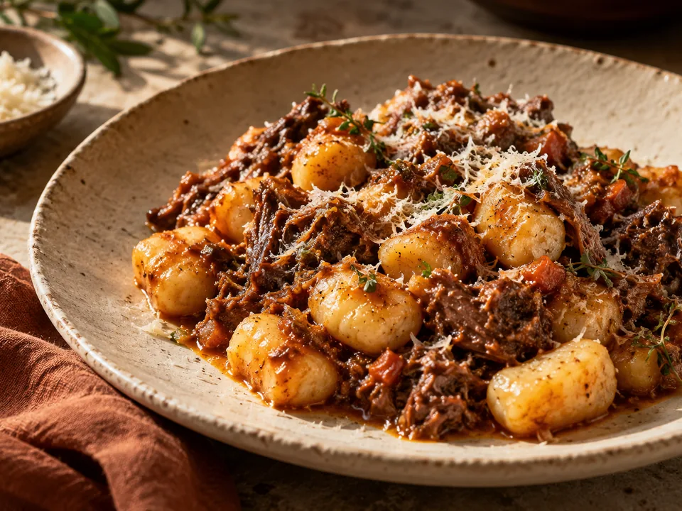
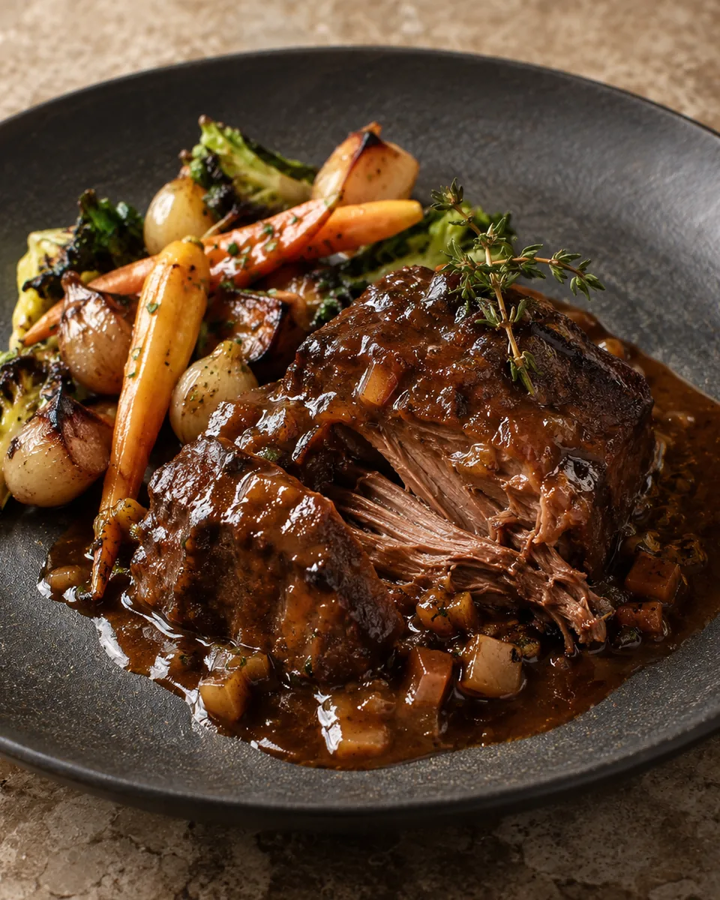
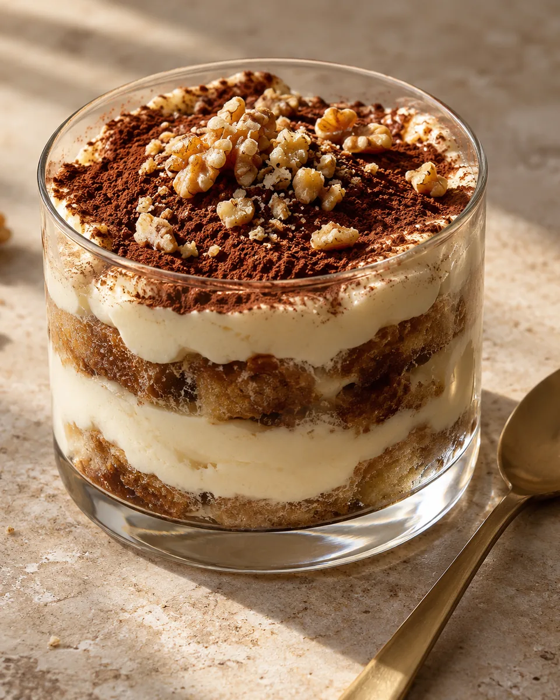

01 / PRIMI
Gnocchi
al ragù.
Con ragù di cinghiale.
Gnocchi con ragù di cinghiale, tra i piatti citati dagli ospiti. Disponibilità da confermare con la trattoria.
Cucina friulana e italiana,
nel centro storico di Cividale.

Gnocchi, brasati
e Gubanamisù.
Gnocchi al ragù, brasati e Gubanamisù: alcune delle proposte segnalate dagli ospiti. Chiamaci per il menu attuale.
Con ragù di cinghiale.
Gnocchi con ragù di cinghiale, tra i piatti citati dagli ospiti. Disponibilità da confermare con la trattoria.

Carne a cottura lenta.
Brasati e stracotti compaiono nelle segnalazioni degli ospiti. Chiedici le proposte disponibili oggi.

Gubana e tiramisù.
Dessert ispirato alla gubana e al tiramisù, citato dagli ospiti. Disponibilità da confermare con la trattoria.
Immagini illustrative generate con AI, non fotografie dei piatti reali. Disponibilità delle proposte da confermare con la trattoria.
Cucina friulana e italiana con interpretazioni contemporanee, in un ambiente raccolto nel centro storico. La trattoria si trova in Piazzetta de Portis, 18.
Vieni a trovarcide Portis
18CIVIDALE DEL FRIULI